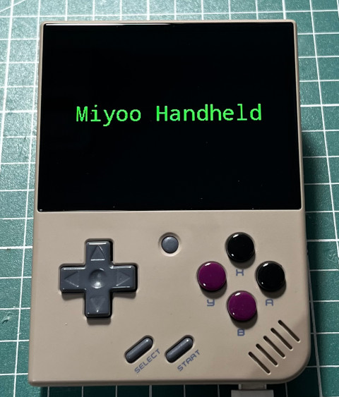

Steward
分享是一種喜悅、更是一種幸福
掌機 - Miyoo Mini Plus - C/C++ - SDL v2.0 - Open Font from Memory
main.c
#include <stdio.h>
#include <stdlib.h>
#include <SDL.h>
#include <SDL_ttf.h>
#include "hex_font.h"
int main(int argc, char **argv)
{
const int w = 320;
const int h = 240;
const int bpp = 16;
SDL_Window *window = NULL;
SDL_Surface *screen = NULL;
SDL_Texture *texture = NULL;
SDL_Renderer *renderer = NULL;
SDL_Init(SDL_INIT_VIDEO);
window = SDL_CreateWindow("main", SDL_WINDOWPOS_UNDEFINED, SDL_WINDOWPOS_UNDEFINED, w, h, SDL_WINDOW_SHOWN);
renderer = SDL_CreateRenderer(window, -1, SDL_RENDERER_ACCELERATED | SDL_RENDERER_PRESENTVSYNC);
screen = SDL_CreateRGBSurface(0, w, h, bpp, 0, 0, 0, 0);
texture = SDL_CreateTexture(renderer, SDL_PIXELFORMAT_RGB565, SDL_TEXTUREACCESS_STREAMING, w, h);
TTF_Init();
SDL_RWops *rw = SDL_RWFromMem(hex_font, sizeof(hex_font));
TTF_Font *font = TTF_OpenFontRW(rw, 1, 30);
SDL_FillRect(screen, &screen->clip_rect, SDL_MapRGB(screen->format, 0x00, 0x00, 0x00));
SDL_Color col = {0, 255, 0};
SDL_Rect rt = {50, 100, 0, 0};
SDL_Surface *msg = TTF_RenderUTF8_Solid(font, "Miyoo Handheld", col);
SDL_BlitSurface(msg, NULL, screen, &rt);
SDL_FreeSurface(msg);
SDL_UpdateTexture(texture, NULL, screen->pixels, screen->pitch);
SDL_RenderClear(renderer);
SDL_RenderCopy(renderer, texture, NULL, NULL);
SDL_RenderPresent(renderer);
SDL_Delay(30000);
TTF_CloseFont(font);
TTF_Quit();
SDL_FreeSurface(screen);
SDL_DestroyTexture(texture);
SDL_DestroyRenderer(renderer);
SDL_DestroyWindow(window);
SDL_Quit();
return 0;
}
編譯、執行
$ bin2header font.ttf hex_font > hex_font.h
$ /opt/mini/bin/arm-linux-gnueabihf-gcc \
-I/opt/mini/arm-buildroot-linux-gnueabihf/sysroot/usr/include/SDL2 \
-lSDL2 -lSDL2_gfx -lSDL2_image -lSDL2_ttf -lSDL2_mixer -lGLESv2 \
main.c -o main
# kill -STOP `pidof MainUI`
# LD_LIBRARY_PATH=.:/config/lib:/customer/lib ./main
# kill -CONT `pidof MainUI`
